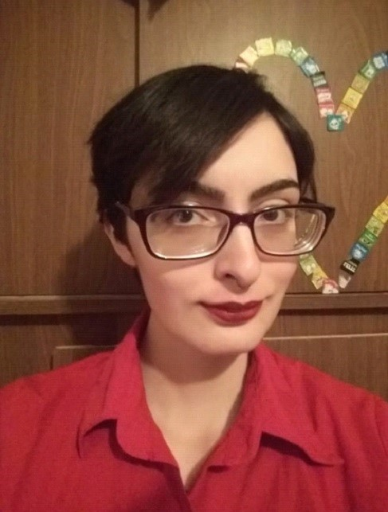

Acerca de mi
Nací el 8 de diciembre de 1998 en Viedma, Río Negro. Tuve una infancia y adolescencia relativamente normal.
Realicé los tres primeros años de secundaria en el CET N°6 (más conocido como la Escuela Industrial) pero los últimos dos años los hice en la Escuela Paulo VI. Ambas escuelas se encuentran en Viedma, Río Negro.
Sin la posibilidad económica de irme a estudiar a otro lado alguna carrera que me generase mayor interés, y con poca oferta de carreras a mi alrededor, decidí cursar estudios terciarios en la Escuela de Arte N°1 Alcides Biagetti, en Carmen de Patagones, Provincia de Buenos Aires. Pude finalizar mis estudios en el tiempo especificado de duración de la carrera, y entonces obtuve el título de Docente de artes visuales (especialización de pintura).
Al poco tiempo de finalizar me di cuenta de que preferiría morir antes que trabajar toda mi vida como docente, porque no hay nada que me guste relacionado a ese oficio. No tengo vocación para dicho trabajo. Entonces, quise empezar de cero, y aquí estoy, cursando la Tecnicatura en desarrollo web. Y hasta ahora si me veo ejerciendo, porque aunque a veces resulta frustrante, me resulta también sumamente interesante y satisfactorio.
